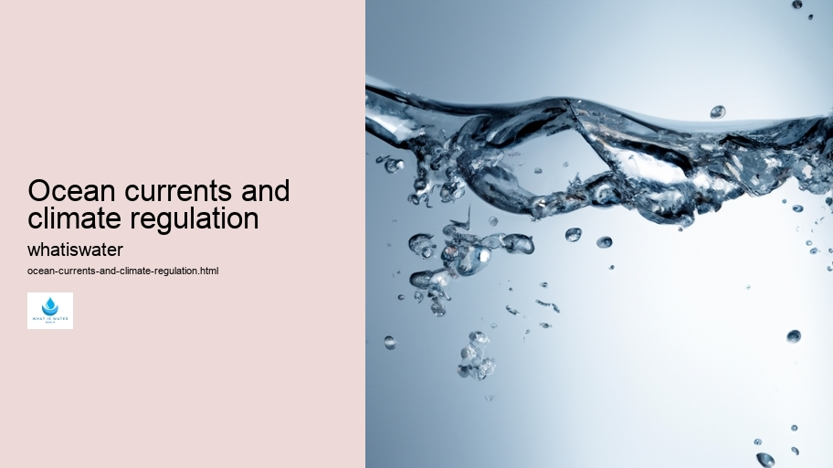

Hydrological Cycle
Hydrological Cycle
Evaporation and transpiration
Condensation and cloud formation
Precipitation and rain patterns
Surface runoff and river systems
Groundwater flow and aquifers
Snowmelt and glacial processes
Water storage in oceans lakes and reservoirs
Soil moisture and infiltration
Water balance and budgeting
Human impact on the hydrological cycle
Marine Ecosystems
Marine Ecosystems
Coral reefs and their biodiversity
Mangrove forests as coastal protectors
Ocean currents and climate regulation
Deepsea habitats and extremophiles
Intertidal zones and estuarine ecosystems
Marine food webs and trophic levels
Freshwater Ecosystems
Freshwater Ecosystems
Conservation efforts for marine species
Marine biogeochemical cycles
Impact of global warming on oceans
Water Resource Management
Water Resource Management
Rivers streams and creeks ecosystems
Lakes ponds wetlands habitats
Biodiversity in freshwater environments
Aquatic plants role in oxygenation
Freshwater fish species diversity
Invasive species impact on freshwater systems
Pollution threats to freshwater sources
Conservation strategies for freshwater biomes
Role of wetlands in flood control
Importance of riparian buffers
Cultural Significance of Water
Cultural Significance of Water
Sustainable water use practices
Desalination technologies for fresh water supply
Wastewater treatment processes
Rainwater harvesting techniques
Management of water during drought conditions
Transboundary water resource politics
Infrastructure for water distribution
Agricultural irrigation efficiency
Urban water demand management
Impact of climate change on water resources
About Us
Contact Us

Ocean currents and climate regulation
Surface Water
Ocean currents are vast, continuous movements of seawater driven by various forces including wind patterns, the Earth's rotation, changes in water density, and differences in temperature.
Ocean currents and climate regulation - Rivers and Lakes
Water Pollution
Water Rights
Rivers and Lakes
They play a pivotal role in regulating the climate on our planet by distributing heat from the equator towards the poles, thereby influencing weather patterns and temperatures across different regions.
Ocean currents and climate regulation - Hydroelectric Power
Hydroelectric Power
Water Pollution
Water Rights
To understand how ocean currents affect climate regulation, one must first recognize the two main types: surface currents and deep-water currents. Surface currents occur near the ocean's surface and are primarily driven by winds. These include well-known systems like the Gulf Stream in the North Atlantic or the Kuroshio in the Pacific.
Ocean currents and climate regulation - Rivers and Lakes
Bottled Water
H2O
Water Cycle
Water Treatment
Aquaculture
Desalination
Deep-water currents, on the other hand, are driven by differences in water density due to variations in temperature and salinity — a process known as thermohaline circulation.
The significance of these moving bodies of water cannot be overstated when it comes to climate regulation. For instance, they have a moderating influence on global temperatures. Warm currents flowing poleward carry heat from tropical regions toward higher latitudes, which helps to temper climates that would otherwise be much colder. Conversely, cold currents moving equatorward can cool down coastal areas that might be excessively warm.
Moreover, ocean currents also impact precipitation patterns around the world.
Ocean currents and climate regulation - H2O
Water Rights
Rivers and Lakes
Thermal Pollution
Bottled Water
H2O
Water Cycle
As warm surface waters evaporate more readily than cooler waters, areas where warm currents prevail tend to experience higher levels of rainfall.
Ocean currents and climate regulation - Water Pollution
Rivers and Lakes
Thermal Pollution
Bottled Water
This moisture is carried inland by prevailing winds and contributes to climatic conditions necessary for diverse ecosystems.
The intricate relationship between ocean currents and climate is evident through phenomena such as El Niño and La Niña events which arise from variations in Pacific Ocean current patterns.
Rivers and Lakes
These events can lead to dramatic shifts in weather patterns globally — causing floods or droughts — affecting agriculture yields, water supplies, and even increasing risks of wildfires.
In addition to their immediate impacts on weather and climate variability on short-term scales (seasonal to annual), oceanic circulations also contribute significantly over longer timescales (decadal to millennial).
Bottled Water
The slow movement of deep-water masses associated with thermohaline circulation acts like conveyor belts transporting not only heat but also dissolved gases (like carbon dioxide) and nutrients around our oceans.
With changing climatic conditions due mainly to human activities such as burning fossil fuels leading to increased atmospheric greenhouse gas concentrations; there is concern that delicate balance maintained by oceanic flows could be disrupted.
Ocean currents and climate regulation - Rivers and Lakes
Water Cycle
Water Treatment
Aquaculture
Desalination
Water Conservation
Melting polar ice affects salinity levels while warming global temperatures alter wind systems – both factors that could potentially modify current paths thus altering heat distribution mechanisms essential for maintaining Earth’s climate equilibrium.
In conclusion, ocean currents serve as a colossal environmental force capable of shaping our planet’s weather systems through effective distribution of thermal energy alongside other vital components necessary for life sustenance such as freshwater delivery via precipitation processes or nutrient dispersal critical for marine biodiversity health preservation efforts worldwide—hence underscoring their indispensable role within complex web interlinking oceans with broader aspects concerning global climatic stability maintenance endeavors holistically speaking.
Hydrological Cycle
Check our other pages :
Conservation efforts for marine species
Invasive species impact on freshwater systems
Mangrove forests as coastal protectors
Lakes ponds wetlands habitats
Frequently Asked Questions
How do ocean currents regulate climate?
Ocean currents act as a global conveyor belt, transporting warm water and precipitation from the equator toward the poles and cold water from the poles back to the tropics. Thus, they regulate climate by redistributing heat around the planet, which helps maintain a balance in temperature. This process influences coastal climates and affects weather patterns by working with atmospheric circulation to distribute thermal energy, moderate temperatures, and influence precipitation.
What would happen if ocean currents were disrupted?
If ocean currents were disrupted, it would have significant impacts on global climate. Temperature regulation across the planet would be affected, leading to more extreme weather conditions such as hotter summers and colder winters. Changes in ocean currents could also impact marine ecosystems due to altered nutrient distribution which can affect food chains. Additionally, there could be shifts in precipitation patterns that might result in droughts or floods in various regions of the world.
Can human activities influence ocean currents?
Yes, human activities can influence ocean currents primarily through climate change. The increase in greenhouse gases leads to global warming, which can alter the temperature gradient between different areas of the ocean—a key driver for current formation. Melting polar ice due to rising temperatures can also inject fresh water into oceans, potentially disrupting salinity-driven components of ocean circulation (like thermohaline circulation). Deforestation and urbanization can affect runoff patterns into oceans as well, influencing surface currents at least regionally.